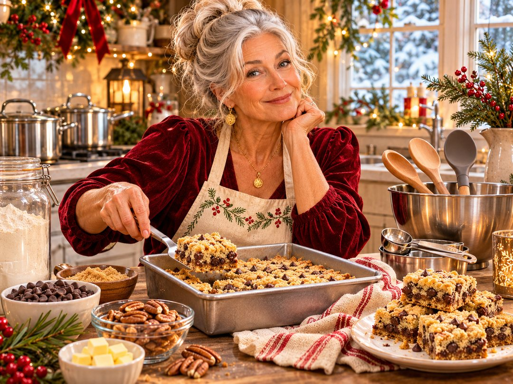
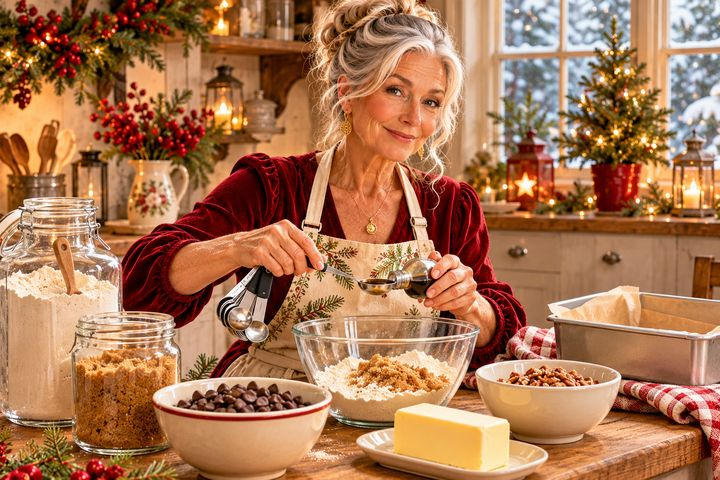
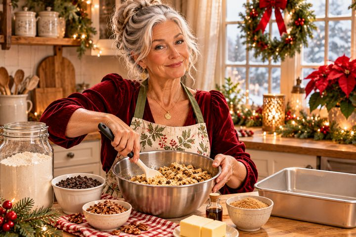
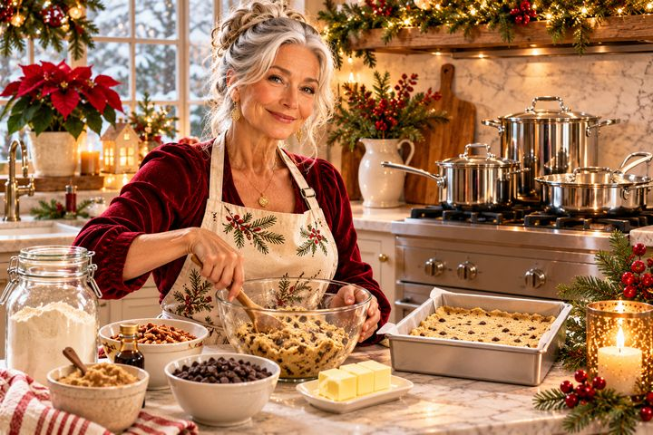

From The Dancing Sage's Christmas Kitchen
Grandma's Chocolate Chip Crumble Bars
No eggs. No milk. No fuss. Just delicious chocolatey, nutty goodness! I thought this recipe was utter madness when I first saw it. But it's ridiculously easy to throw together, and the results are lovely!

 FREE: Grandma’s 10 Christmas recipes as printable cardsPrint, cut and keep, or tuck one in a gift. Get them free →
FREE: Grandma’s 10 Christmas recipes as printable cardsPrint, cut and keep, or tuck one in a gift. Get them free →
Ingredients
- 1 cup butter or margarine, softened
- 1 cup packed brown sugar
- 1 teaspoon vanilla extract
- 2 cups all-purpose flour
- 1 cup finely chopped pecans or walnuts
- 1 cup semi-sweet chocolate chips
Instructions
- Preheat your oven to 350°F (175°C).
- In a large mixing bowl, combine the butter, brown sugar, vanilla and flour until the mixture resembles coarse crumbs.
- Stir in the chopped pecans and chocolate chips until evenly distributed.
- Press the mixture firmly and evenly into an ungreased 9 × 9-inch baking pan.
- Bake for approximately 25 minutes, or until lightly golden brown.
- Cut into small squares while still warm.
- Allow to cool completely in the pan before removing.
These bars are naturally crumbly, so press the mixture firmly into the pan and let them cool before lifting them out. When I made them, I thought they could use a little more butter. Next time I'll try 1¼ cups for bars that hold together a bit better.
How it comes together



Good to know
Why no eggs?
There's nothing in this recipe to make the bars rise or bind like a cake, and that's the point. With only butter, sugar and flour holding things together, you get something closer to a chocolate chip shortbread: tender, buttery and a little crumbly. That's also why the firm press and the full cool-down matter so much.
Cutting neat squares
Cut while the bars are still warm, then leave them in the pan until completely cool. Once cold, they firm up and lift out cleanly. If you'd like to lift out the whole slab at once, line the pan with parchment paper, leaving a little overhang on two sides.
Storing
Keep the bars in a covered tin or container with parchment paper between the layers. Like most buttery squares, they also freeze well wrapped tightly, which makes them a handy one to bake ahead for the Christmas tray.
Swaps
Walnuts work just as well as pecans. For a nut-free batch, leave the nuts out and add a little extra chocolate chips instead. Milk chocolate chips make a sweeter bar if little ones are helping.
Questions people ask
Why are my crumble bars falling apart?
Usually one of three things: the mixture wasn't pressed firmly enough, the bars were lifted out before they'd cooled completely, or a little too much flour crept in. Spoon your flour into the cup and level it rather than scooping straight from the bag. And if you'd like a sturdier bar, try the extra ¼ cup of butter from Grandma's tip. The same reasons explain why shortbread turns out crumbly, too.
Can I use margarine instead of butter?
Yes. The recipe works with butter or margarine. Butter gives the richest flavour, but margarine is a perfectly good stand-in if that's what you have.
Do I need to grease the pan?
No. There's so much butter in the mixture that the bars won't stick to an ungreased pan.
A few useful tools for making these bars and other Christmas treats!
- 🍰 Nordic Ware 9 × 9-Inch Square Baking Pan
- 🥄 OXO Good Grips Mixing Spoons
- 🥄 OXO Good Grips Measuring Spoons
- 🍲 Cuisinart MultiClad Pro 12-Piece Stainless Steel Cookware Set (a general kitchen favourite rather than something needed for this recipe)
As an Amazon Associate, I earn from qualifying purchases.
Christmas baking doesn't need to be complicated. We've enough madness to deal with already! 🎄
🎄 Want more Christmas recipes as pretty printable cards? Get Grandma's Christmas Recipe Cards free.